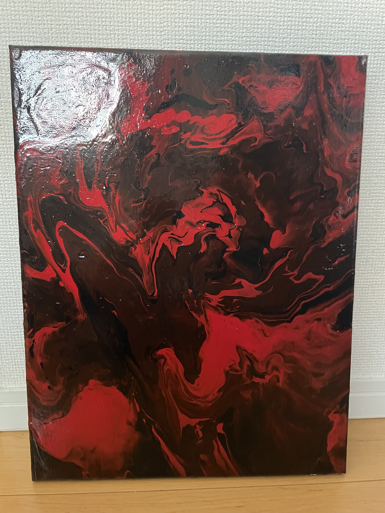
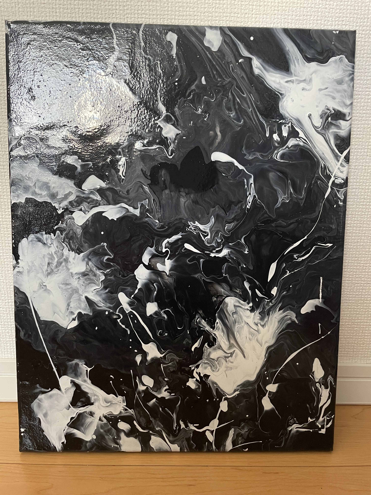
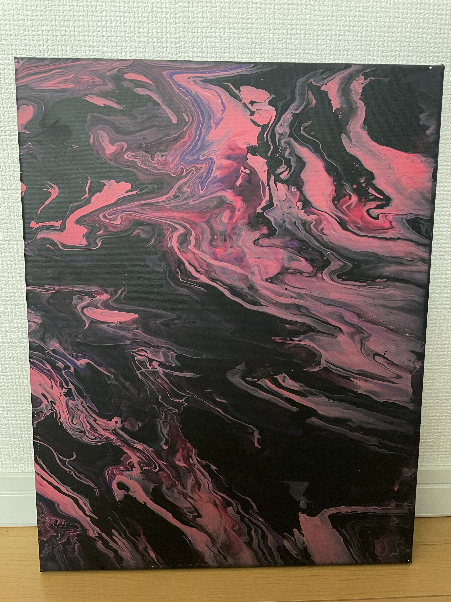

Fluid Art
春休みに友達とフルイドアート（ポーリングアートとも言う）というアクリル絵の具を用いた抽象画に挑戦しました。 そこまで難しくないだろうと思っていたのですが、 中々上手くいかず、試行錯誤して上手くできた作品たちです。 ポーリングアートはやるのも楽しいですし模様も美しいのでやってみてよかったです。 靴下とズボンが汚れます。結構お金もかかります。 友達の家に使っておらず倉庫のようになっていた離れがあったので 電気を通して片付けてもらい、レジャーシートを広げて使わせてもらいました。 自宅では中々できないです。



